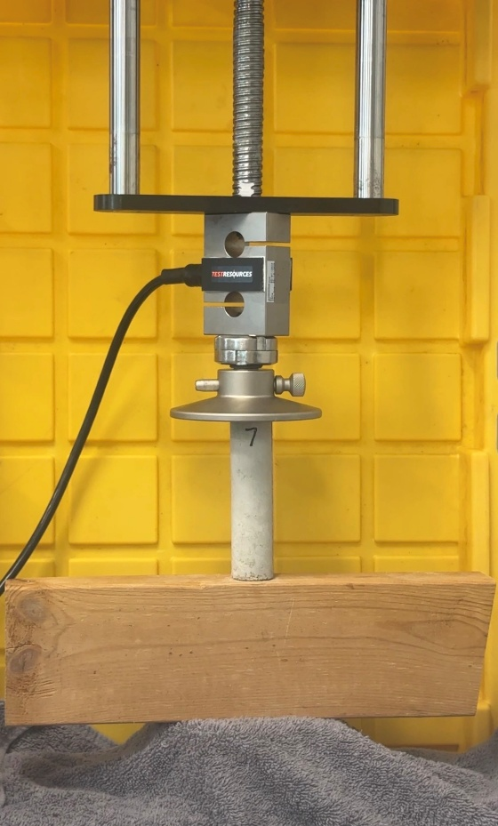
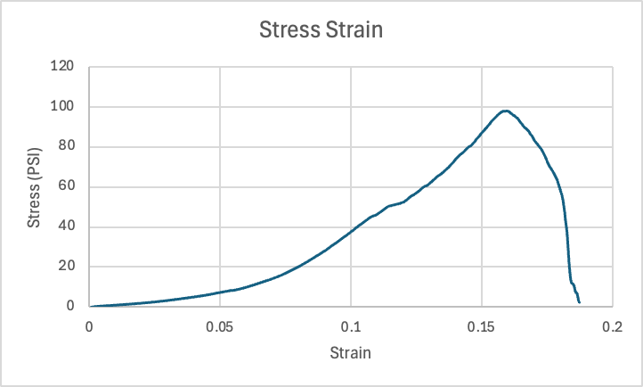

Concrete Cylinder Compression Lab
1. Introduction
The purpose of this experiment was to analyze the compressive behavior of a concrete cylinder using a Universal Testing Machine (UTM). The test measured the maximum load the specimen could withstand before failure, as well as its stress and deformation characteristics. Using the collected data, critical load, Young's modulus, maximum stress, and lateral deflection were found. Young's modulus was compared to typical values for concrete. This experiment helps demonstrate how materials behave under compressive loading and highlights factors that influence structural performance.
2. Procedures
Using concrete cylinder number 7 the diameter and length were measured before testing. The specimen was positioned vertically in the Universal Testing Machine (UTM), making sure it was aligned correctly with the compression plates.
The lab technician input the cylinder's dimensions into the UTM software, and safety goggles were put on before starting the test. The concrete cylinder we tested is pictured in Figure 1 in its position prior to running the UTM.

The machine gradually applied a compressive load until the cylinder broke. Observations were noted during the test, and photos were taken both before and after the failure. The data collected was exported as a CSV file for further analysis.
2.1 Safety Precautions
Safety precautions were followed while operating the Universal Testing Machine (UTM). Safety glasses were worn at all times to protect against potential debris from the cylinder during the compression test. Hands and loose clothing were kept clear of moving components, and only the machine operator controlled the equipment during testing.
3. Results and Discussion
The concrete cylinder was 4.034 inches in length, with a cross-sectional area of 1.023 in². Strain was calculated by dividing displacement by the original length of the specimen. To get stress, force in pounds was divided by the cross-sectional area.
Average stress was then calculated in Excel, subtracting two points in the elastic range. That was then repeated for strain. The stress–strain relationship for the specimen is illustrated in Figure 2, showing the elastic region, yield point, and ultimate stress. Those values were then used to calculate Young's modulus by dividing stress by strain to get 903.8 psi.

The maximum load (Pcr) was found using the formula Pcr = π²EI/L². When I = πR⁴⁄4 and R = √(1.023⁄π), this gives I = 0.0834 in⁴ and Pcr = 45.65 lb.
The maximum stress was calculated using the highest recorded load of 395.4 lb / 1.023 in² to get 386.5 psi.
The maximum lateral deflection of the cylinder, assuming Poisson's ratio for concrete, ν = 0.1, was found using the diameter times the max axial deflection (Pcr⁄E). Putting these equations together, the maximum lateral deflection is 0.0428 in.
Key Results
Table 1. Reduced Test Data
| Time (s) | Load (lbf) | Position (in) | Stress (psi) | Strain |
|---|---|---|---|---|
| 1 | −1.87 | −0.0046 | 0.46 | 0.0045 |
| 2 | −7.36 | −0.0177 | 1.82 | 0.0173 |
| 3 | −16.39 | −0.0344 | 4.06 | 0.0336 |
| 4 | −29.54 | −0.0511 | 7.32 | 0.0499 |
| 5 | −51.83 | −0.0677 | 12.85 | 0.0662 |
| 6 | −90.69 | −0.0844 | 22.48 | 0.0825 |
| 7 | −146.61 | −0.1010 | 36.34 | 0.0987 |
| 8 | −200.86 | −0.1176 | 49.79 | 0.1150 |
| 9 | −257.92 | −0.1343 | 63.94 | 0.1313 |
| 10 | −338.32 | −0.1509 | 83.87 | 0.1475 |
| 11 | −355.63 | −0.1676 | 88.16 | 0.1638 |
| 12 | −167.76 | −0.1843 | 41.59 | 0.1802 |
The concrete cylinder we used was poured on April 8 and tested on April 15, meaning it had approximately 7 days of curing time, whereas concrete takes roughly 28 days to gain its full strength. Due to our concrete cylinder being only one week old and being small to work in the UTM, the calculated Young's modulus of 903.8 psi is weak compared to where it should be. The expected Young's modulus for concrete is around 3.6 × 10⁶ psi. Our concrete cylinder also had some noticeable air pockets from when it was poured, which can also cause it to be weaker. When breaking, our cylinder crumbled into a cone-shaped pattern with a slight point at the top.
4. Potential Errors
Mechanical error — The UTM had a wooden block used to get the cylinder to fit in the machine. This wooden block is less dense than the metal machine, which could be why the side of the cylinder on the metal crumpled while the side on the wood stayed intact.
Measurements — One possible error is having incorrect measurements for the cross-sectional area. If these numbers are off by even 0.001 inches, the modulus of elasticity changes drastically.
5. Conclusion
The purpose of this experiment was to evaluate the compressive behavior of a concrete cylinder using a Universal Testing Machine. The maximum load, stress, and deformation characteristics were successfully determined.
The experimental Young's Modulus was significantly lower than expected values for concrete, likely due to measurement inaccuracies, improper alignment, and the young curing age of the specimen. The cylinder exhibited brittle failure, which is typical for concrete under compression.
Overall, this experiment demonstrated the challenges of accurately measuring material properties and highlighted the importance of proper setup and data analysis.